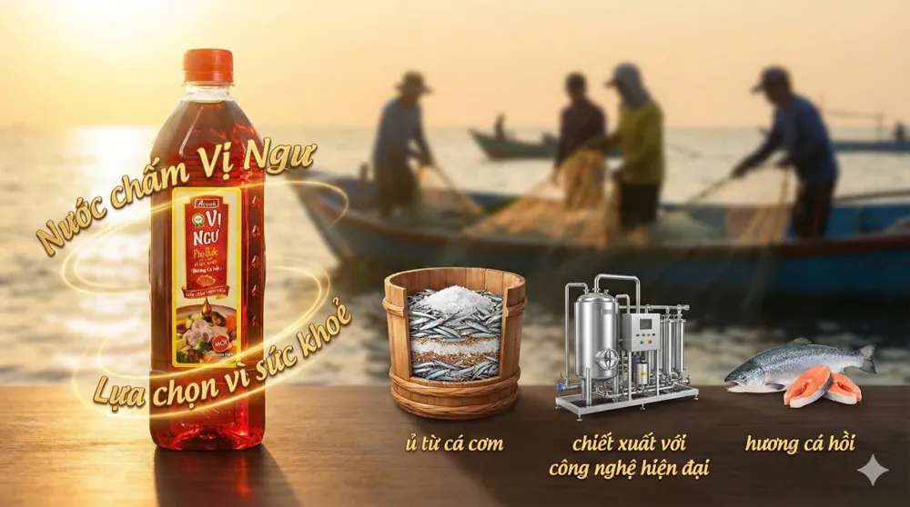
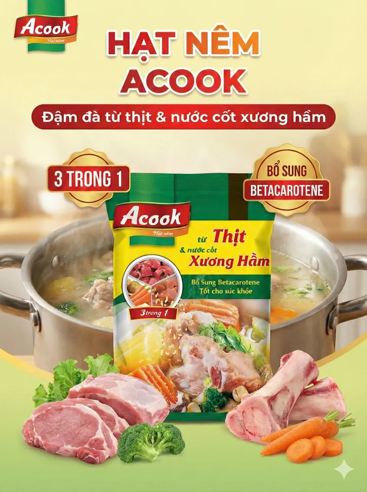
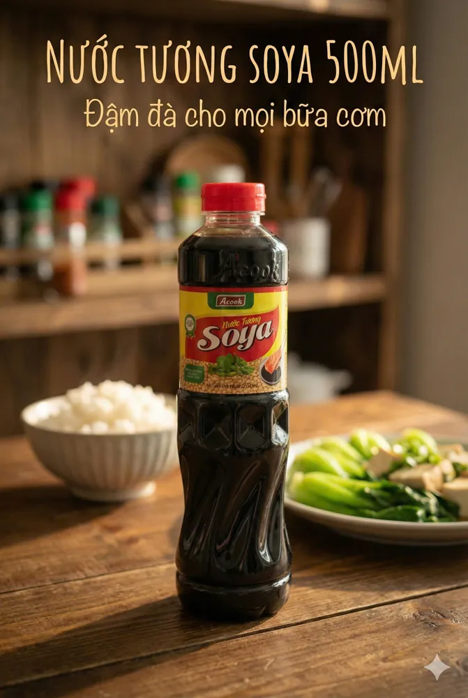
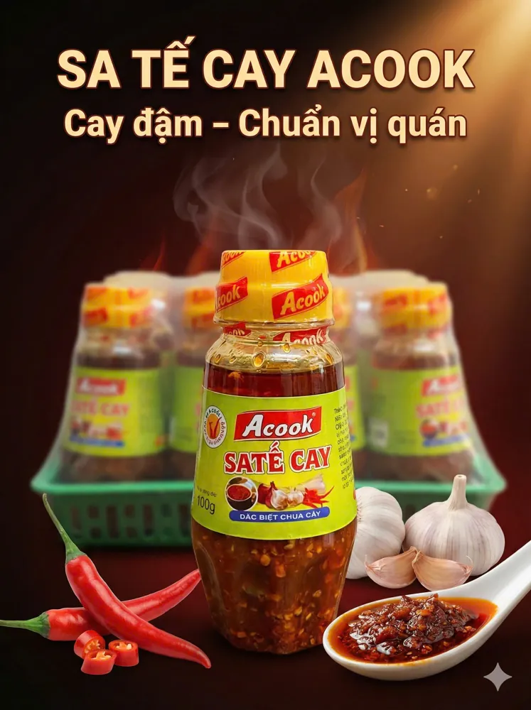
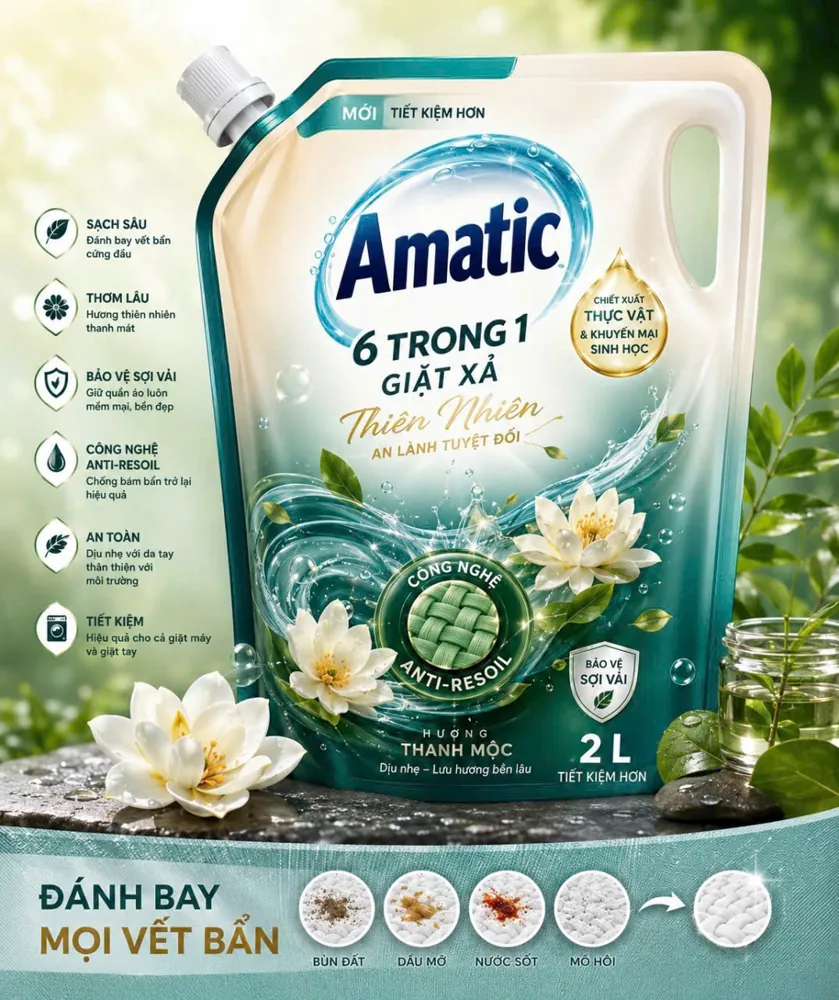

Acooki - Thương hiệu nước mắm Việt, gia vị của mọi nhà
- 3
- nhà máy tại huyện Củ Chi, TP.HCM
- 8
- bước ủ chượp theo quy trình truyền thống
- 6
- nhóm sản phẩm: nước mắm, hạt nêm, nước tương, sa tế, tương ớt, hóa phẩm
- OEM
- nhận gia công nước mắm độc quyền
Thương hiệu nước mắm Việt, ủ chậm cho vị đậm đà
Nước mắm Acooki được chế biến từ nguồn nguyên liệu tươi ngon, ủ và lên men tự nhiên qua quy trình truyền thống để giữ lại trọn vẹn dưỡng chất và hương vị nguyên bản.
Màu hổ phách óng ánh cùng hương thơm nồng nàn làm món ăn thêm hấp dẫn, và mang lại sự hài lòng cho mỗi bữa cơm gia đình.
- Nguyên vịGiữ hương vị cá cơm tự nhiên của biển.
- Nguyên chấtỦ chượp lên men tự nhiên, từ cá và muối biển.
- Đậm đàVị mặn ngọt hài hòa cho nước chấm lẫn món nấu.

Nhìn tận nơi cách Acooki làm nước mắm
Video thực tế và chính sách ưu đãi dành cho quý đối tác đại lý, nhà phân phối của Công ty Asian Việt Nam.
 Video thực tế Acooki
Video thực tế Acooki
Sáu nhóm sản phẩm cho mọi gian bếp
Từ nước mắm nguyên chất đến hạt nêm, nước tương, sa tế, tương ớt và hóa phẩm gia dụng, đủ quy cách cho gia đình lẫn bếp lớn.
Nước mắm Nhĩ Ngư
Màu hổ phách óng ánh, hương thơm nồng nàn từ cá cơm tươi.
Xem chi tiết
Nước mắm Vị Ngư
Nguyên vị, nguyên chất, đậm đà. Chai 750ml đến can 4,8L.
Xem chi tiết
Hạt nêm Acook
3 trong 1 thịt, xương hầm; có bản chay nấm và bao lớn 5-10kg.
Xem chi tiết
Nước tương Soya
Từ đậu nành, đậm đà cho mọi bữa cơm. Chai 500ml, can 4,8L.
Xem chi tiết
Sa tế & tương ớt
Sa tế cay, sa tế tôm, tương ớt, tương xay: đậm vị bữa cơm nhà.
Xem chi tiết
Hóa phẩm gia dụng
Nước giặt Amatic và nước rửa chén Chanh thơm sạch cho mọi nhà.
Xem chi tiếtTừ biển khơi đến chai nước mắm: 8 bước giữ trọn hương vị
Mỗi giọt nước mắm Acooki đi qua quy trình truyền thống từ chọn cá, ủ chượp đến lọc và đóng chai.
-
Chọn cá
Chọn những lứa cá cơm tươi ngon nhất.
-
Chọn muối
Chọn loại muối tốt nhất, không chát, không đắng.
-
Trộn đều
Trộn cá và muối theo đúng tỉ lệ.
-
Ủ chượp
Ủ cá trong chượp để cá lên men tự nhiên.
-
Phơi chượp
Phơi chượp để thành phẩm thơm hơn và lên màu đẹp hơn.
-
Lọc mắm nhĩ
Lọc để loại bỏ tạp chất và váng mắm.
-
Đóng chai
Đóng chai và bảo quản theo quy trình.
-
Gửi khách hàng
Acooki gửi đến bạn hương vị nước mắm nguyên chất từ biển cả.
Hợp tác cùng Acooki
Hai hướng hợp tác dành cho đối tác kinh doanh và doanh nghiệp muốn có thương hiệu nước mắm riêng.
Đại lý và nhà phân phối
Chính sách ưu đãi riêng cho quý đối tác đại lý và nhà phân phối của Công ty Asian Việt Nam.
Nhận chính sách đại lýGia công nước mắm độc quyền
Xây dựng thương hiệu nước mắm riêng của bạn, sản xuất tại nhà máy Acooki ở Củ Chi.
Trao đổi về gia côngTin mới nhất từ Acooki
Kiến thức nước mắm, ẩm thực và thị trường, cập nhật từ website chính thức.
Acooki có chính sách ưu đãi riêng cho đối tác đại lý và nhà phân phối. Vui lòng liên hệ hotline 0966220012 để được tư vấn.
Có. Chúng tôi nhận gia công để doanh nghiệp xây dựng thương hiệu nước mắm riêng.
Từ cá cơm tươi và muối biển, ủ chượp lên men tự nhiên theo quy trình truyền thống.
Nước mắm Vị Ngư, Nhĩ Ngư, hạt nêm, nước tương, sa tế, tương ớt và hóa phẩm gia dụng.
Có. Vui lòng liên hệ hotline hoặc nhắn tin Facebook để được hỗ trợ.
Nhà máy đặt tại huyện Củ Chi, TP.HCM, gồm 3 cơ sở.
Đối tác và thương hiệu đồng hành
Cùng Acooki đưa nước mắm Việt đến nhiều bàn ăn hơn
Nhận chính sách ưu đãi cho đại lý, nhà phân phối và dịch vụ gia công nước mắm độc quyền.